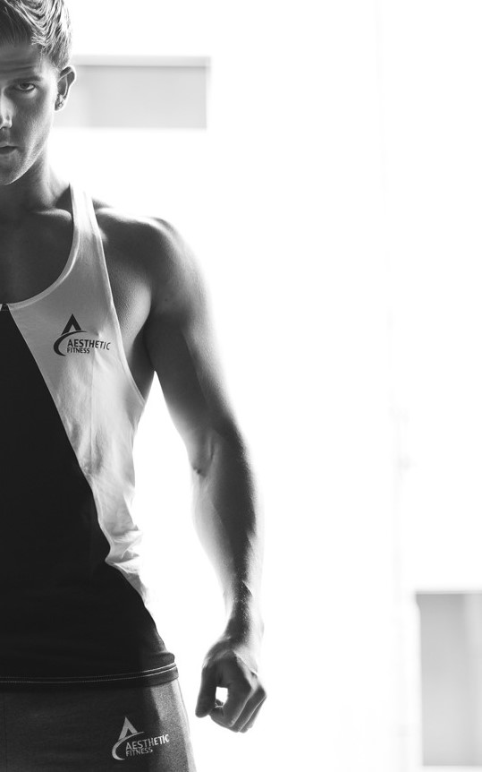

Building a proportional, symmetrical body takes a special kind of training. It requires more than just pulling heavy deadlifts—it's an art. Here's a guide to creating your own statuesque physique!
Size, shape, proportion, conditioning, symmetry, and balance: combine all of these into one human body and you get amazing aesthetics. Forty years ago, guys like Serge Nubret, Frank Zane, Sergio Oliva, and Arnold Schwarzenegger were the kings of aesthetics. They built strong, powerful bodies that looked incredible from every angle. They all had a tiny waist, an insane V-taper, and slabs of quads that made their knees look tiny. These guys were so great that their legacy is just as inspiring and powerful today as it was in the '70s. These days, with so much emphasis on muscle size, strength, and power, many of us have forgotten how to train for anything other than performance. And while performance is important, physique goals such as building an Adonis-like physique can be just as vital. First of all, your aesthetics won't come if you don't eat right. Because you're constantly damaging your muscles, you need to repair them with lots of protein. Eat at least 0.8 grams of protein per pound of bodyweight each day and you'll see that growth. But if you're one of the thousands of people who crave the body of a Greek god over anything else, you need to train especially for aesthetics. Get it right, and one day you could find yourself on stage with a trophy in your hands. Here's your guide to building a body Michelangelo could have carved!